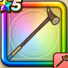

さとりのつえ
攻略班 8.0点 / キアリクバギクロスザオラルいやしの波動※錬成で強化可能
くわしい特徴
【レベル別習得スキル】 Lv1【賢者】かいふく魔力+5 Lv1キアリク（消費MP：10）仲間全員の麻痺をなおす Lv10戦闘終了時にMPを10回復する Lv15バギクロス（消費MP：21）敵全体にバギ属性の呪文中ダメージを与える Lv20ザオラル（消費MP：25）仲間ひとりをHP50%で復活させる Lv30いやしの波動（消費MP：36）味方全体のHPを回復する Lv35呪文HP回復効果+10% Lv45さいだいMP+12 Lv50かいふく魔力+12錬成スキル改1とくぎHP回復効果+5%改2いやしの波動改（消費MP：42）仲間全員のHPを回復し、敵1体に固定ダメージを与える攻撃を同時に行う改3バギクロスのダメージ+100%改4錬成ぶき特別演出解放・メガモン討伐結果発表時に特別演出が追加・武器の見た目に特別なエフェクトが追加 【限界突破スキル】 1凸じゅもんダメージ+5% 2凸とくぎHP回復効果+5% 3凸じゅもんダメージ+5% 4凸とくぎHP回復効果+5%